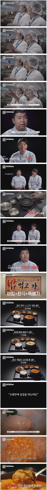
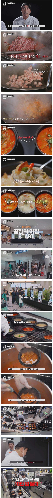
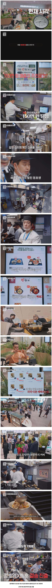

헐 연복쌤 안보인다
와 근데 개맛잇어보이네
이거 평가기준이 그냥 메뉴랑 가격 구성이 원툴 아님? 재방문할 사람들도 아니고 맛이야 있든 없든 걍 일단 호객 후에 결제만 성공하면 되는 거 아녀
그래서 먹은손님들 별점도 받아서
별점 키오스크에 실시간공개하기도하고
별점따라 매출 곱하기몇퍼도 해줌
먹힐만한 메뉴구성과 맛이 중하지만
본방 보면 글러먹은 광고를 하는 사람들
쓸때없이 광고에 돈을 많이 쓴 사람들
다른팀 메뉴구성의 헛점을 파고든 사람들
다양함
그렇게 장사하다가 바로 별점공개해버림
그러니까 별점 높은데로 몰리기시작
게다가 별점에 따라서 매출 X 120% 뭐 이런 시스템이라서 걍 먹힐만한 구성만이 다가 아님
그리고 결국 별점과 매출은 높은데 사용한 재료비가 많아서 뒤집어지기도 함
공항이라 비싸다
처음이자 마지막 한식인데 뜨끈한 뚝배기국물 한술은 못참음ㅋㅋㅋㅋ
오히려 출국전보다 귀국때 자주 먹는데 현지에서 뭐 먹고 귀국하거나 집 가서 먹을 생각 아니면 귀국하고 무조건 한식 생각남.
김치찌개 만 팔천 원? 가격 생각 안 나더라 그냥 내 목구멍에 칼칼한 김치찌개 국물 털어 넣고 싶단 생각뿐.